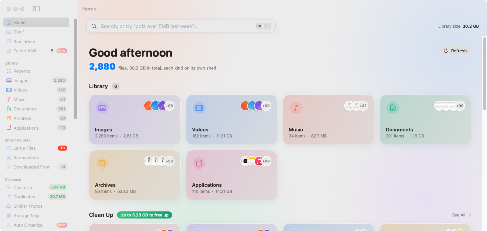
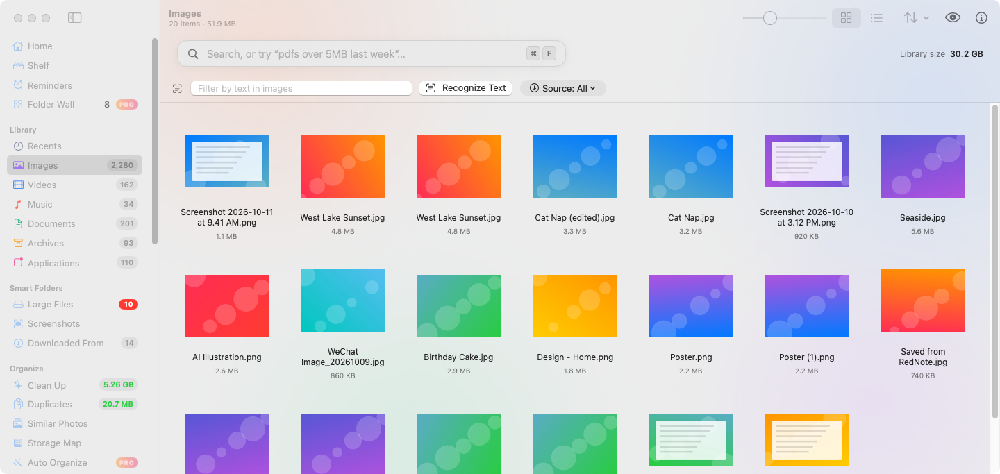
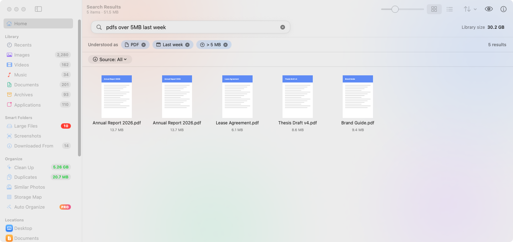
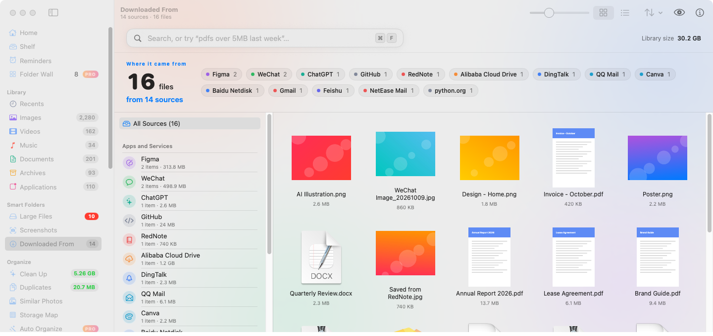
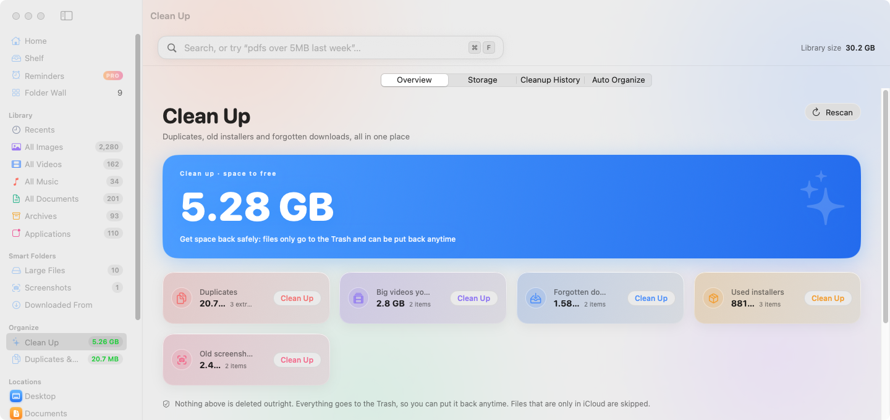
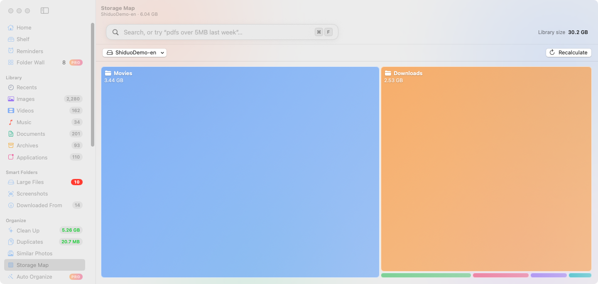
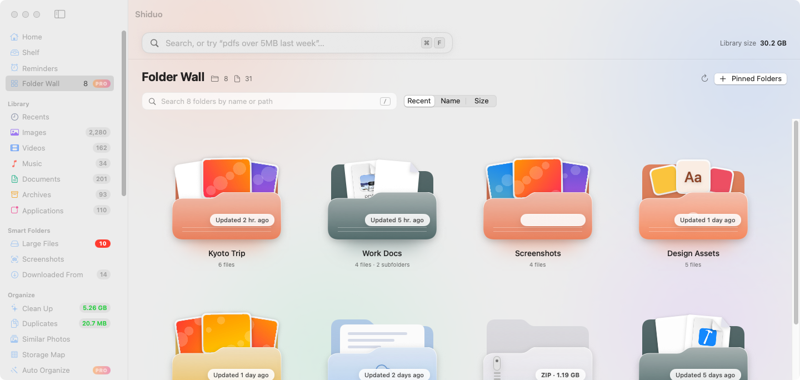
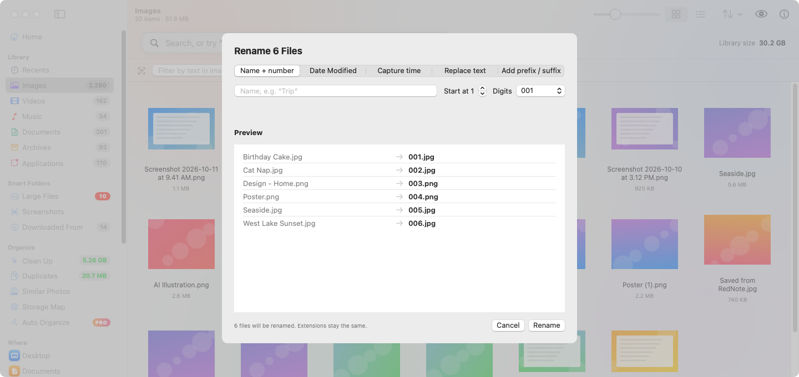
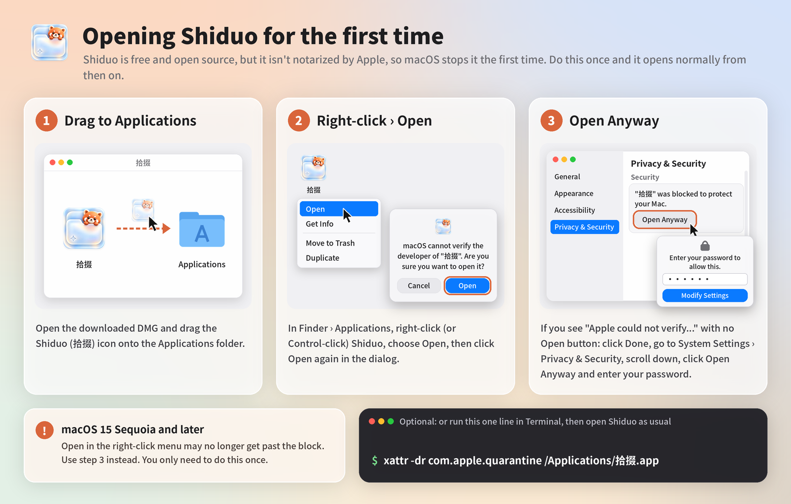
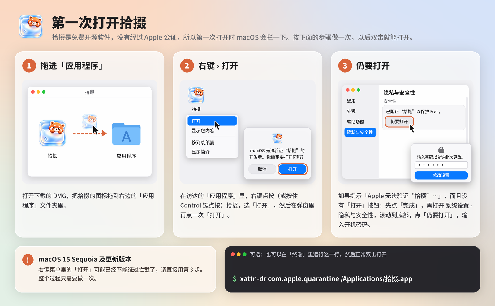

Shiduo (拾掇) works alongside Finder. Browse files by kind with big thumbnails, search in plain Chinese or English, see where every download came from, and clean up safely. Everything stays on your Mac.
拾掇是访达的好帮手：按类别用大缩略图浏览文件，用中文或英文一句话搜索，看清每个下载从哪儿来，放心清理。所有处理都在你的 Mac 本机完成。
First launch: macOS asks once because Shiduo isn’t notarized. How to open it第一次打开时 macOS 会拦一下（应用未经 Apple 公证）。看看怎么打开
macOS 14 or later · Apple silicon & Intel · No account · No tracking需要 macOS 14 或更高版本 · 支持 Apple 芯片和 Intel · 无需账号 · 不追踪


Images, videos, music, documents, archives and apps, each with big thumbnails and an adjustable grid.
图片、视频、音乐、文稿、压缩包和应用程序各有一格，大缩略图，网格大小可调。

Type “PDFs over 5 MB from last week” or “上周超过5MB的pdf” and see it turned into filters you can edit.
输入“上周超过5MB的pdf”或“PDFs over 5 MB from last week”，自动变成可以修改的筛选条件。

Group files by the site or app they came from, such as Gmail, Google Drive, ChatGPT or WeChat.
按来源网站或 App 给文件分组，比如 Gmail、Google 云端硬盘、ChatGPT、微信。

Old installers, forgotten downloads, big old videos, duplicates and look-alike photos. Files always go to the Trash, never deleted outright.
旧安装包、被遗忘的下载、很久没看的大视频、重复文件和相似照片。文件只会移到废纸篓，绝不直接删除。

See which folders take up space at a glance.
一眼看出哪些文件夹最占空间。

Your pinned folders as a wall of glossy cards. The newest photos peek out, documents show paper, archives get a zipper. Pick any color, drop files in, rename or move right from the card.
固定的文件夹变成一面立体卡片墙：最新的照片从里面探出来，文稿露出纸张，压缩包带拉链。颜色随意调，把文件拖进去，直接在卡片上重命名、移动。

Text in screenshots (on-device OCR), batch rename, image conversion, Finder tags and a global quick-search panel.
识别截图里的文字（本机 OCR）、批量重命名、图片转换、访达标签，以及全局快速搜索浮窗。
Every feature above, free forever. Open source under the MIT License.
上面所有功能永久免费，以 MIT 许可证开源。
A license key that unlocks extra helpers. No subscription. Free updates.
一个授权码，解锁更多省心的帮手。不订阅，免费更新。
7-day free trial in the app, no account needed. One license works on one Mac at a time and can be moved to another Mac. Taxes may apply at checkout.
App 内可免费试用 7 天，无需账号。一个授权同一时间可在一台 Mac 上使用，也可以转移到另一台 Mac。结账时可能需要支付税费。
| Feature功能 | Free免费版 | Pro |
|---|---|---|
| Visual library: images, videos, music, documents, archives, apps分类图库：图片、视频、音乐、文稿、压缩包、应用 | ✓ | ✓ |
| Plain-language search in Chinese or English中英文一句话搜索 | ✓ | ✓ |
| Downloaded-from sources (Gmail, WeChat, ChatGPT…)下载来源（Gmail、微信、ChatGPT…） | ✓ | ✓ |
| Text in images (on-device OCR)识别图中文字（本机 OCR） | ✓ | ✓ |
| Safe cleanup, duplicates, look-alike photos放心清理、重复文件、相似照片 | ✓ | ✓ |
| Storage map空间占用图 | ✓ | ✓ |
| Batch rename, image conversion, Finder tags批量重命名、图片转换、访达标签 | ✓ | ✓ |
| Shelf and global quick-search panel (⌥Space)暂存架、全局快速搜索浮窗（⌥空格） | ✓ | ✓ |
| Auto-organize rules (move or trash by type, name, source or age, with undo)自动整理规则（按类型、名称、来源或时间自动归位，可撤销） | — | ✓ |
| Scheduled cleanup reminder定时清理提醒 | — | ✓ |
| Search photos by what’s in them (on-device)按画面内容搜索照片（本机识别） | — | ✓ |
| External drives in the sidebar侧边栏浏览外接磁盘 | — | ✓ |
| Menu bar helper菜单栏小助手 | — | ✓ |
| Floating shelf under the notch or at the screen edge刘海或屏幕边缘的悬浮暂存架 | — | ✓ |
| File reminders (on time, or when you open WeChat, DingTalk, Feishu or Mail)文件提醒（到点，或打开微信、钉钉、飞书、邮件时） | — | ✓ |
| Number keys: ⌃⌘1–0 copy your 10 most recent files数字键直达：⌃⌘1–0 拷贝最近 10 个文件 | — | ✓ |
| Folder Wall: pinned folders as glossy cards, with photos and papers peeking out文件夹墙：固定的文件夹变成立体卡片，照片和文稿从里面探出来 | — | ✓ |
| Move big files to an external drive, NAS or cloud folder, with a stand-in left behind that still opens大文件搬家：一键搬到移动硬盘、NAS 或网盘，原处留替身，双击照样打开 | — | ✓ |
| Saved searches in the sidebar, with live counts保存搜索：常用搜索固定在侧边栏，数量自动更新 | — | ✓ |
| Folder colors: tint folders and add a symbol, emoji or picture文件夹上色：给文件夹换颜色，加符号、表情或图片 | — | ✓ |
| Price价格 | Free免费 | $9.90early bird $6.90早鸟 $6.90 |
Finder is great at opening files; CleanMyMac is a full maintenance suite. Shiduo sits in between, focused on your own files.
访达擅长打开文件，CleanMyMac 是一整套系统维护工具。拾掇专心管你自己的文件。
| Feature功能 | Shiduo拾掇 | Finder访达 | CleanMyMac |
|---|---|---|---|
| Find big files找大文件 | ✓ | Partly部分 | ✓ |
| Auto-organize Downloads自动整理下载 | ✓Pro | — | Partly部分 |
| Move to an external drive, leave an alias behind搬到外接盘，原处留替身 | ✓Pro | Partly部分 | Partly部分 |
| Undo a cleanup within 30 days30 天内恢复删除 | ✓ | Partly部分 | Partly部分 |
| Notch shelf刘海暂存架 | ✓Pro | — | — |
| Runs locally, no file uploads本地运行，不上传文件 | ✓ | ✓ | Mostly主要本地 |
| Open source开源 | ✓MIT | — | — |
| Price价格 | Free免费Pro $9.90 oncePro $9.90 一次买断 | Built in系统自带 | Subscription订阅制one-time license also sold另有一次性授权 |
Based on public information as of October 2026. “Partly” means it can be done, but by hand or only in some cases (for example, Finder’s Trash can put files back; CleanMyMac can move large files to a folder on another drive). CleanMyMac is a trademark of MacPaw; Shiduo is not affiliated with MacPaw.对比基于 2026 年 10 月公开信息。「部分」表示能做到，但需要手动或只在部分情况下可行（比如访达的废纸篓可以放回原处，CleanMyMac 可以把大文件移到其他磁盘的文件夹）。CleanMyMac 是 MacPaw 的商标，拾掇与 MacPaw 无关。
Grab the latest build from GitHub Releases. It’s free.从 GitHub Releases 下载最新版，免费。
First time only: right-click › Open, or use Open Anyway. How只有第一次：右键 › 打开，或在设置里点「仍要打开」。怎么做
Shiduo scans your folders right away and lays everything out by kind.拾掇马上扫描你的文件夹，按类别摆得清清楚楚。
Shiduo is free and open source but isn’t notarized by Apple, so macOS stops it the first time. You only need to do this once.
拾掇是免费开源软件，没有经过 Apple 公证，所以第一次打开时 macOS 会拦一下。只需要处理一次。


macOS 15 Sequoia and later: Open in the right-click menu may no longer get past the block, so use step 3.
macOS 15 Sequoia 及更新版本：右键菜单里的「打开」可能已经不能绕过拦截了，请直接用第 3 步。
Optional, in Terminal:可选：在「终端」里运行
xattr -dr com.apple.quarantine /Applications/拾掇.appNo. Scanning, search, text recognition and photo recognition all run on your Mac. Shiduo only goes online to check for updates and to verify a Pro license key.
不会。扫描、搜索、文字识别和照片识别都在你的 Mac 上运行。拾掇只在检查更新和校验 Pro 授权码时联网。
After you pay, the key appears on the order confirmation page and in your receipt email. Enter it in Shiduo › Settings › License.
付款后，授权码会显示在订单确认页，也会发到你的收据邮件里。在“拾掇 › 设置 › 授权”里输入即可。
Yes, within 14 days of purchase. See the Refund Policy.
可以，购买后 14 天内都能申请全额退款。详见退款政策。
Email 694561981@qq.com. We usually reply within 2 working days, in Chinese or English.
发邮件到 694561981@qq.com。我们通常在 2 个工作日内回复，中文或英文都可以。